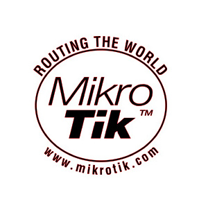
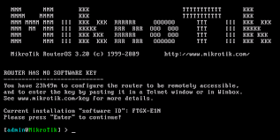
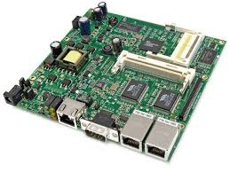

Sejarah Mikrotik
Ditulis Oleh ardhian syachrial
Apa itu Mikrotik? Pengertian Mikrotik & Penjelasannya - Mikrotik adalah sebuah perusahaan yang bergerak di bidang produksi perangkat keras (hardware) dan perangkat lunak (Software) yang berhubungan dengan sistem jaringan komputer yang berkantor pusat di Latvia, bersebelahan dengan Rusia. Mikrotik didirikan pada tahun 1995 untuk mengembangkan router dan sistem ISP (Internet Service Provider) nirkabel.

Mikrotik dibuat oleh MikroTikls sebuah perusahaan di kota Riga, Latvia. Latvia adalah sebuah negara yang merupakan “pecahan” dari negara Uni Soviet dulunya atau Rusia sekarang ini. Mikrotik awalnya ditujukan untuk perusahaan jasa layanan Internet (PJI) atau Internet Service Provider (ISP) yang melayani pelanggannya menggunakan teknologi nirkabel atau wireless. Saat ini MikroTikls memberikan layanan kepada banyak ISP nirkabel untuk layanan akses Internet dibanyak negara di dunia dan juga sangat populer di Indonesia. MikroTik sekarang menyediakan hardware dan software untuk konektivitas internet di sebagian besar negara di seluruh dunia. Produk hardware unggulan Mikrotik berupa Router, Switch, Antena, dan perangkat pendukung lainnya. Sedangkan produk Software unggulan Mikrotik adalah MikroTik RouterOS.
Mikrotik Router OS
MikroTik RouterOS™ adalah sistem operasi dan perangkat lunak yang dapat digunakan untuk menjadikan komputer manjadi router network yang handal, mencakup berbagai fitur yang dibuat untuk ip network dan jaringan wireless, cocok digunakan oleh ISP dan provider hotspot. Untuk instalasi Mikrotik tidak dibutuhkan piranti lunak tambahan atau komponen tambahan lain. Mikrotik didesain untuk mudah digunakan dan sangat baik digunakan untuk keperluan administrasi jaringan komputer seperti merancang dan membangun sebuah sistem jaringan komputer skala kecil hingga yang kompleks sekalipun.
Mikrotik RouterBoard
RouterBoard adalah router embedded produk dari mikrotik. Routerboard seperti sebuah pc mini yang terintegrasi karena dalam satu board tertanam prosesor, ram, rom, dan memori flash. Routerboard menggunakan os RouterOS yang berfungsi sebagai router jaringan, bandwidth management, proxy server, dhcp, dns server dan bisa juga berfungsi sebagai hotspot server.